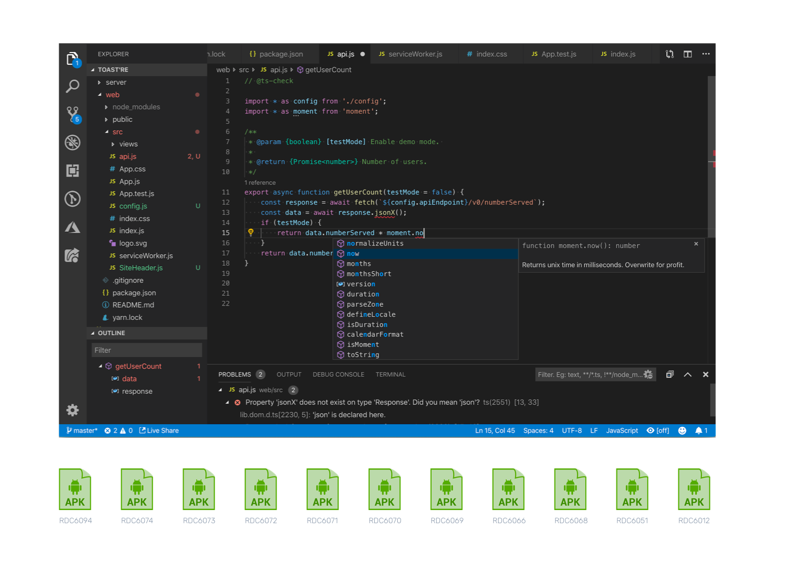
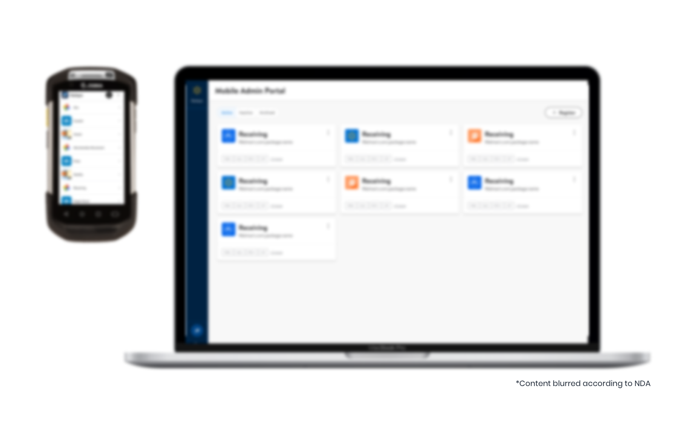
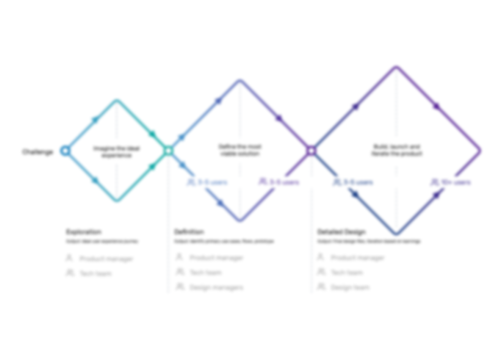
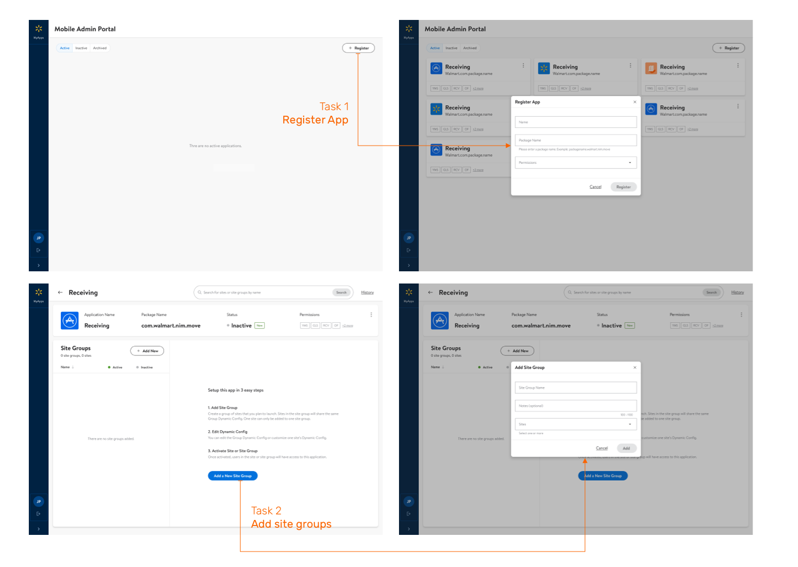
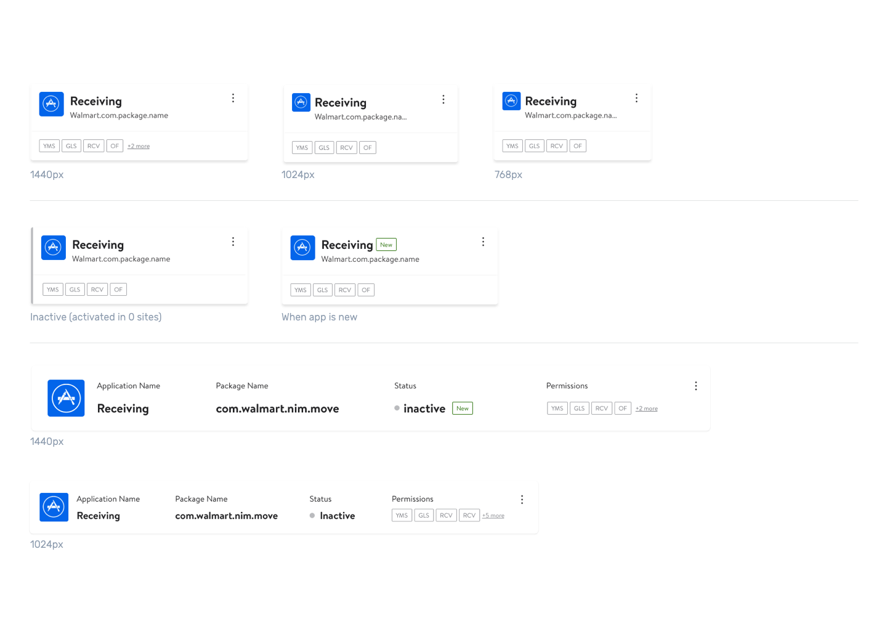
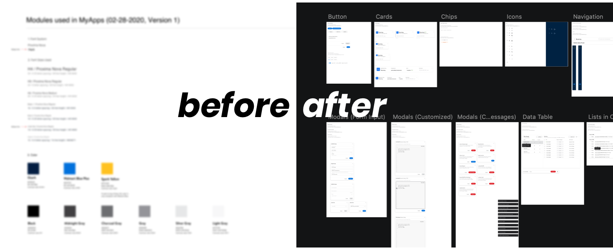

MyApps
Background
MyApps Admin Platform is designed for developers to speed up product launch at Walmart supply chain team. Before this platform, developers need to create a new file for even a small tweak needed. As time goes by, they lose track to details and find it hard to manage files. This project aims at building the first version of MVP to fill this gap. With this design, developers will have visibility into all launched versions and can directly customize files for sites. After one year's work, this platform is being pilotsed and will become the go-to place for 40+ dev teams to configure and launch applications.

Outcome
MyApps Web for warehouse associates is released to 200+ distribution centers with 20+ apps implemented. MyApps Admin Portal is being piloted in 2021 Q3. In the design phases, I imporved the user satisfaction level for 5 main use cases. Participants loved the code editor design and have high willingness to use the platform. My product manager pointed out that this project was delayed for 3 years and since I joined it is different.
My role
I was the only designer on this end-to-end design design process in this project. I utilized double-diamond design process before developers start their agile cycle. I managed to know the end users, learned how we could help and where are the design opportunities to make things even better. To validate assumptions discovered from research process, I invited developers to review our prototyes and constantly push the product forward. I remembered there was a time, I put a search box in the detail page even though we didn't have time for it. Whenever I got the extra bandwidth, I spent sometime on it until it is finished.
But I am also a great colloborator, not just following my wild design dreams. I created timelines so that dev teams had expectations on flows to be delivered. In the weekly meetings, I shared out my discoveries, supporting prototypes and next steps with my product/dev team. I think it is so important to not hide behind designer's self ego. To me, we are all teammates working on different aspects with the same goal to make something great.
Strong willingness to use the system
It was delayed for 3 years, and it is different now
Highlights
Differentiate one time task from daily tasks
To achieve a higher user satisfaction rate, I proposed some solutions and discussed if we could improve the experience within the given timeline with my design director. After winning his support, I scheduled meeting with tech lead and negotiated ways to earn some extra time to finish this iteration. As a result, we decided to handoff this prototype flows by flows. This makes sure that the backend team can start building, and I got the time needed to make design modification. When I valided the new concept with users, there were no users complaining about the problem anymore. And users got excited and loved the new concept. Despite all the pressure, what I learned is that doing things fast but also doing things right can push the project forward in the right direction.
Increase consistency with design systems, but push it forward
Right after the project started, Walmart design team announced that they would release an associate-facing Design System. But I wasn't sure what it would be like. I was informed by my design manager to use the previous design system for first handoff. We planned to create a new design task to achieve consistency when the new design system launched. I realized that this may bring heavy workload to the development team. If they hard coded components, considering the workload, the design team would face huge obstacles asking them to change the appearance.
To prevent this potential problem, I created a UI library specifically for MyApps Admin Portal. I listed out all the components and instances. This helped the backend team build reusable components knowing the looks would change in the future. When the new design system launched, I identified the components to modify and demoed to the devs through comparison. As the devs have already built reusable components using unified CSS style, they quickly agreed to make this modification.
Meanwhile, I didn't just wait for the Living Design team to told us what to build. When I tested with end users, I noticed there were some components users were complaning about, like the site selector dropdown. This pattern received negative feedback in several rounds of user testing and I decided to take a stab at it. I created a new way of selection and proposed to the managers. This concept was later proposed to the Living Design Team and eventually became a new component. The new site selector is now implemented in over 40 apps in Supply Chain area.

Design for users' habits
In our earily assumption, we thought letting users type key pairs and key pairs value would increase the sucess rate. However, when I talk to users, one of the common pattern users were complaining about is these code input boxes. Developers expressed wishes to directly copy and paste from their local code editor, rather than being forced to input content through individual input boxes. I went through several iterations to test this code editor concept. It was proved to be feasible according to the tech team. Every time I demotrated the concept to users, they claimed the code editor_comparison mode is one of their favorite features.
Reflection
This has been a great experience working directly with developers from brainstorming to development. The design team and tech team have been incredibly supportive. The whole team was always flexible and open-minded. Over-communication is never a problem in this team, more like a habit to pursue something better.
One thing I think can be improved in this project is the strategy to prioritize user feedback. I decided to optimize some flows based on my experience or personal insights. If I have the opportunity to redo the project, I would use more quantitive methods to communicate the importance.